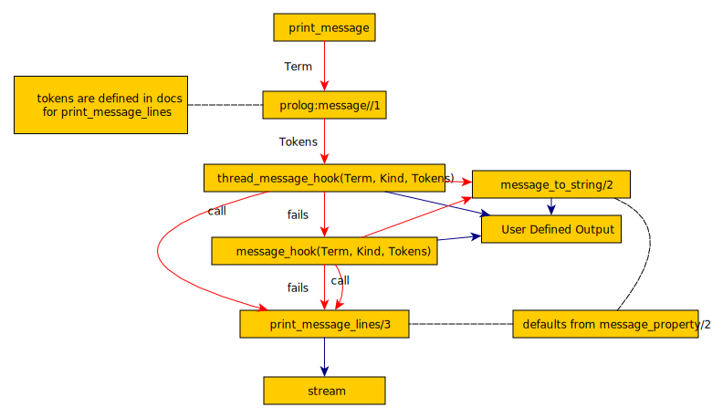

1. About This Tutorial
Libraries are useful bits of functionality, usually provided with a carefully thought out API that hides the messy details from the user.
And this is wonderful, until IO happens. Then the neat abstraction is broken. Every useful library will, sooner or later, encounter an abnormal condition, like a missing file, that the library itself can’t handle. The usual reaction of the program is often to somehow display an error message. Or perhaps the purpose of the library is to interact, but simply printing unstructured text out stderr is inconvenient for library users, who may need to handle the condition programmatically, translate the message, or display the message elsewhere, like a GUI or web page. Letting the library user control all this increases code reuse.
This tutorial is about handling such output properly, especially in libraries, using a system borrowed from Quintus Prolog. It is particularly important for authors of packs to follow this method, and not simply use format/3, since they won’t know what environment their code might be used in.
It should take most programmers well under an hour.
This tutorial should be accessible to any programmer who understands the basics of Prolog. While this tutorial is about SWI-Prolog’s implementation, it should apply to most near ISO Prologs.
2. The Pipeline
Message handling follows a pipeline. The rest of this tutorial explores that pipeline in detail, but here’s a simplified version.
A message enters the pipeline through print_message/2. The appication programmer can call print_message/2. The top-level exception handler, the debug/3 predicate, and other system predicates like version/0 also call it.
The message is a Prolog term that encodes the semantics of the message, rather than a string that encodes it in English or some other language.
The format of a message is the same as the standardized format of an exception. Since Prolog is typeless, a message is, effectively, just an exception term.
A hookable pipeline produces a list of tokens (called "lines") to be output.
The token list is passed to another hookable predicate, print_message_lines//1, to be printed, sent to the web page, or whatever.
This is the basics. Here’s the complete pipeline, in all it’s gory detail:

3. Producing a Message Term
The message pipeline starts with a semantic message .
3.1. Semantic Messages
A semantic_message is a (usually compound) term that defines the message in terms of it’s meaning, or semantics , instead of creating a string representation.
There are message terms defined in the ISO standard for various exceptions thrown by the standard predicates, and of course the pipeline produces messages for these. But the mechanism is general.
For example, here’s some terms we use at The Elgin Works for error messages from our product management code. SKT is our internal number for the product.
-
data_error(SKT, no_name) - there’s no human readable name (like beany baby, elephant, large) for this.
-
no_such_part(Part) - we make things out of parts, which we give numbers. We don’t know about a part with that number.
And here’s the code that converts those terms into English (which we’ll explain later):
:- multifile prolog:message//1.
prolog:message(data_error(SKT, no_name)) -->
[ 'The skt ~w lacks a human readable name'-[SKT]].
prolog:message(no_such_part(Part)) --> {
skt_bom(SKT, BOM),
member(Part, BOM)
},
[ 'The part ~w is used in ~w (poss. others too) but not defined'-[Part, SKT]].
prolog:message(no_such_part(Part)) -->
[ 'The part ~w is not defined or used???'-[Part]].If the application programmer finds a part 42 they can’t identify, they just call print_message(error, no_such_part(42)) .
Notice that the code that converts the message works pretty hard. It goes out to see if it’s used in a product, and if so, says which one.
This happens transparently for the programmer who prints the message, which means they don’t have to do it over and over, and it gets done. We’re all busy, and making things convenient often means increasing quality.
As another example, here’s the term that means "File Not Found", as produced by open/3:
3 ?- catch(open('nosuchfile.txt', read, _), E, true).
E = error(existence_error(source_sink, 'nosuchfile.txt'), context(system:open/3, 'No such file or directory')).Semantically, E means something like "An error, specifically that source_sink nosuchfile.txt doesn’t exist. This happened in system:open/3 . A good error message might be No such file or directory "
Which is a lot more flexible than the string No such file or directory . By having hooks in the pipeline, set up by the application programmer, do the translation, the library programmer isn’t forcing his or her way on the application programmer. The application programmer can print "Bestand of map bestaat niet", log the error, or whatever’s appropriate.
All these standard error terms are defined in the http://www.deransart.fr/prolog/exceptions.html[ISO Standard] exception set. I often try to make my own exceptions throw terms that conform to this set.
There is one other message you should know about, but avoid using.
The message format(Format, ArgList) is predefined to translate to the string that would result from format/2.
Don’t do this. It short circuits the whole idea of a semantic error term.
Finally, there’s a message form debug/2, which is produced by the debug/3 predicate and handled by the debug message system.
Exercise: Put this in a file and then query print_banner/0. Now change the kind from banner to warning. Note that the text is now red.
:- multifile prolog:message//1.
print_banner :-
print_message(banner, annies_amazing_thing(7,3,23)).
prolog:message(annies_amazing_thing(Major, Minor, Rev)) -->
[ 'Annie\'s Amazing Thing!', nl,
'Does Something Or Other!', nl,
'Rev ~d.~d.~d'-[Major, Minor, Rev],
nl].Exercise: Take a library you’ve written, preferably in Prolog, but in any language, and look through it for an error message. How is the message constructed? Imagine your library is being used in a dedicated machine controller with an oddball display, for sale in Japan. Will your library need modified?
Exercise: With the same or different code, look at the normal program output code. If it instead put out semantic terms, could it be used in other situations you might not have considered when it was written?
Exercise: When was the last time you were paid to write code that parsed output of a library because the library’s output wasn’t in a convenient format? How much were you paid? How many programmers are there in the world?
Exercise: Generate a half dozen error terms by doing illegal things in SWI-Prolog and catching the error, like above.
Exercise: Imagine you’re writing a library to connect to an external service, say an LDAP server. Use the linked page above and figure out what ISO error term should be thrown if the server can’t be reached.
4. Converting Messages to Strings
print_message/2 will convert the message term to a string, and then display it. There are lots of hooks to influence this process along the way.
[print_message/2 takes two arguments, the kind of message and the message term.
The kind of message is an atom that describes what general kind of message it is. There are lots of kinds of message, and we leave you to check them out. An often overlooked kind is help .
In more detail, what really happens next is translating from the message term to a list of tokens. In the simplest case, these tokens are atoms that will become lines of output. This is the point where semantics becomes words.
The translation process uses the multifile DCG prolog:message//1 , which we saw in the stock control example above.
prolog:message//1 is called using phrase, and passing the message term as it’s semantic argument. If it succeeds, the list it generates will be the token list.
Some messages are defined by SWI-Prolog’s license module. They’re a good example of prolog:message//1. Here’s some of them defined in license.pl :
:- multifile
prolog:message//1.
prolog:message(unknown_license(License)) -->
[ 'Unknown license: ~w. Known licenses are:'-[License], nl ],
license_list.
prolog:message(license(gpl, Modules)) -->
[ 'This system may only distributed using the GNU General Public License', nl,
'because the following components contain GPL-ed code:', nl, nl
],
file_list(Modules),
see_also.
prolog:message(license(lgpl)) -->
[ 'This program may be distributed under any license, provided all', nl,
'conditions implied by the GNU Lesser General Public License', nl,
'are satisfied. In particular, this implies the source code', nl,
'to any modification in SWI-Prolog or one of the used libraries', nl,
'must be made available.', nl
],
see_also.
prolog:message(license(proprierary(L), Modules)) -->
{ license(L, _, Att) },
{ memberchk(comment(C), Att)
-> true
; C = L
},
[ nl,
'The program contains modules covered by the "~w" license'-[C], nl
],
( { memberchk(url(URL), Att) }
-> [ 'See ~w'-[URL], nl ]
; []
),
[ nl ],
file_list(Modules).Notice that not every element of the list is an atom. print_message_lines/3 defines a number of tokens. Here’s some of them:
-
<format>-<args> Where Format is an atom and Args is a list of format arguments. Handed to format/3.
-
flush Flush the output. Suppress the final newline
-
some ANSI coloring related tokens - see the docs
-
nl start a new line of the message
Defining your own messages and default prolog:message//1 handlers can make your library much more flexible, and yet error messages just print if the user doesn’t do anything special.
Exercise: Look through some of your own Prolog code for what terms you throw.
Exercise: Define a message type, and prolog:message//1 handler for it that produces some reasonable message using every kind of token you can from print_message_lines/3.
Exercise: Change a little hack you’ve written to use print_message/2, custom message terms, and prolog:message//1 for any format/2 or writeln calls in it.
5. Producing Output
We now have a list of tokens. We can, if we want, get a string at this point by calling message_to_string/2.
All that’s left is to actually display the output to the user in a way appropriate for the application.
The pipeline can be hooked at this point. If the hook succeeds, it’s handled the printing, or flag waving, or whatever output, and the pipeline ends. If not, it’s passed onto print_message_lines/3 for processing.
But, there are actually two hooks. The first checked is a thread_local hook predicate, thread_message_hook/3. The second is message_hook/2. So messages can be handled differently, for example, if they’re on an HTTP handler thread than if they’re on backend threads.
Both take the same 3 arguments: The message term, the kind of message (from the first argument of print_message/2) and the list of tokens.
If we’re going to print it on a console, message_to_string/2 will give us the string, and we output it however’s appropriate. That could be munging the output somehow and passing it to print_message_lines/3, or it could be something completely different.
If the hooks fail, the message goes to print_message_lines/3, which takes a stream to print on, a prefix to prepend on every line, and the list of tokens. The prefix is usually a prompt.
6 ?- print_message_lines(user_output, 'Oh Fudge! ', ['no more milkshakes available!', nl, 'Oh, Noes!', nl]).
Oh Fudge! no more milkshakes available!
Oh Fudge! Oh, Noes!
true.Notice that the kind isn’t passed to print_message_lines/3. We can influence the way print_message_lines/3 prints, depending on kind, by using message_property/2. This is how we can get things like WARNING on the front of the line. A very useful option to message_property/2 is location_prefix, which allows printing the source file and line number if it’s set before the process is set off.
You can also set the stream to output to, and have the system wait after displaying the message.
Exercise: Revisit the Annie’s Amazing Thing exercise from near the start of this tutorial, using the code below, which is identical except it uses debug(foo) as the kind.
Put this in a file and then query print_banner/0. You see the message, blue and with %'s, for debug.
Query debug(foo) (ignore the no matching topic warning) to turn on debugging the topic foo. Open the debug monitor from the menus or by querying prolog_ide(debug_monitor). Query print_banner/0 again. You get blue text with % on the front, but do not get a message in the debug monitor. Why?
:- multifile prolog:message//1.
print_banner :-
print_message(debug(foo), annies_amazing_thing(7,3,23)).
prolog:message(annies_amazing_thing(Major, Minor, Rev)) -->
[ 'Annie\'s Amazing Thing!', nl,
'Does Something Or Other!', nl,
'Rev ~d.~d.~d'-[Major, Minor, Rev],
nl].Exercise: Make a little console quiz program that asks a few questions about animals. Keep a score in a file, and color questions, answers, and correct and incorrect feedback different colors. All output from the program, including writing the file, should go through the message pipeline.
Exercise: Redirect the program to be a web page.
Exercise: Store the scores as XML.
Exercise: Find a piece of Prolog code you like and clean it up so it passes all output through the pipeline. Provide appropriate default message//1, and perhaps contextual coloring for output.
Exercise: Sit around a bit and try to think up cool, out of the box uses for the message pipeline.
6. Takeaway
Don’t directly print messages from your library code with format. Use the messaging system.
Your users will love you for it.
Your library will become much more maintainable and reusable.
Your teeth will be whiter, and your children smarter and better behaved.
7. Acknowledgements
Thanks to Jan Wielemaker, who patiently explained some of the fine points of all this, and who first encouraged me to write this tutorial.
Thanks to Paulo Moura, who explained a few more, and gave this tutorial the benefit of his editorial eye.